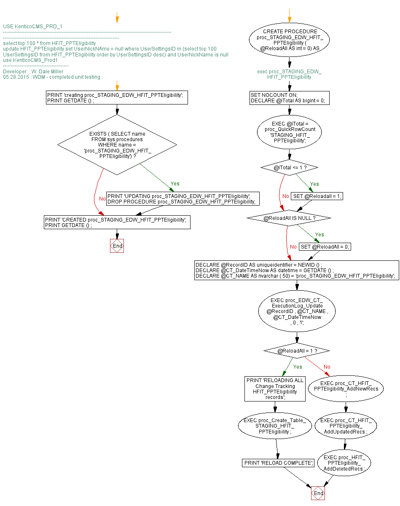

<a href="proc_STAGING_EDW_HFIT_PPTEligibility.png"></a>
-- USE KenticoCMS_PRD_1 /*------------------------------------------------------------------------------------------------------------------------------------------------------------------------- select top 100 * from HFIT_PPTEligibility update HFIT_PPTEligibility set UserNickNAme = null where UserSettingsID in (select top 100 UserSettingsID from HFIT_PPTEligibility order by UserSettingsID desc) and UserNickName is null */ GO -- use KenticoCMS_Prod1 /*--------------------------------------- Developer : W. Dale Miller 05.28.2015 : WDM - completed unit testing */ GO PRINT 'creating proc_STAGING_EDW_HFIT_PPTEligibility'; PRINT GETDATE () ; GO IF EXISTS ( SELECT name FROM sys.procedures WHERE name = 'proc_STAGING_EDW_HFIT_PPTEligibility') BEGIN PRINT 'UPDATING proc_STAGING_EDW_HFIT_PPTEligibility'; DROP PROCEDURE proc_STAGING_EDW_HFIT_PPTEligibility; END; GO -- exec proc_STAGING_EDW_HFIT_PPTEligibility CREATE PROCEDURE proc_STAGING_EDW_HFIT_PPTEligibility ( @ReloadAll AS int = 0) AS BEGIN SET NOCOUNT ON; DECLARE @iTotal AS bigint = 0; EXEC @iTotal = proc_QuickRowCount 'STAGING_HFIT_PPTEligibility'; IF @iTotal <= 1 BEGIN SET @Reloadall = 1; END; BEGIN IF @ReloadAll IS NULL BEGIN SET @ReloadAll = 0; END; DECLARE @RecordID AS uniqueidentifier = NEWID () ; DECLARE @CT_DateTimeNow AS datetime = GETDATE () ; DECLARE @CT_NAME AS nvarchar ( 50) = 'proc_STAGING_EDW_HFIT_PPTEligibility'; EXEC proc_EDW_CT_ExecutionLog_Update @RecordID , @CT_NAME , @CT_DateTimeNow , 0 , 'I'; IF @ReloadAll = 1 BEGIN PRINT 'RELOADING ALL Change Tracking HFIT_PPTEligibility records'; EXEC proc_Create_Table_STAGING_HFIT_PPTEligibility ; PRINT 'RELOAD COMPLETE'; END; ELSE BEGIN EXEC proc_CT_HFIT_PPTEligibility_AddNewRecs ; EXEC proc_CT_HFIT_PPTEligibility_AddUpdatedRecs ; EXEC proc_HFIT_PPTEligibility_AddDeletedRecs ; END; END; END; GO PRINT 'CREATED proc_STAGING_EDW_HFIT_PPTEligibility'; PRINT GETDATE () ; GO
Hide code
Visustin flow chart for T-SQL